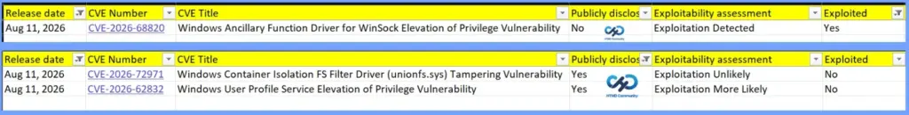
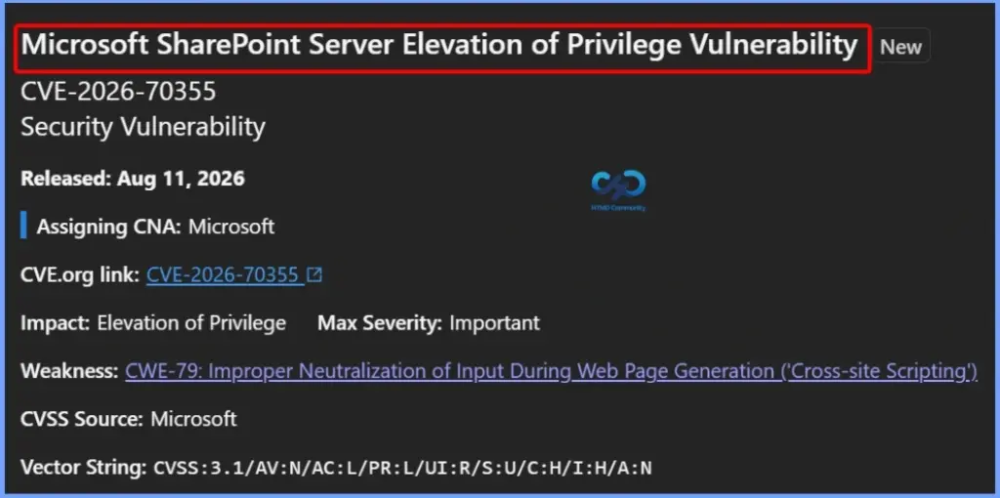
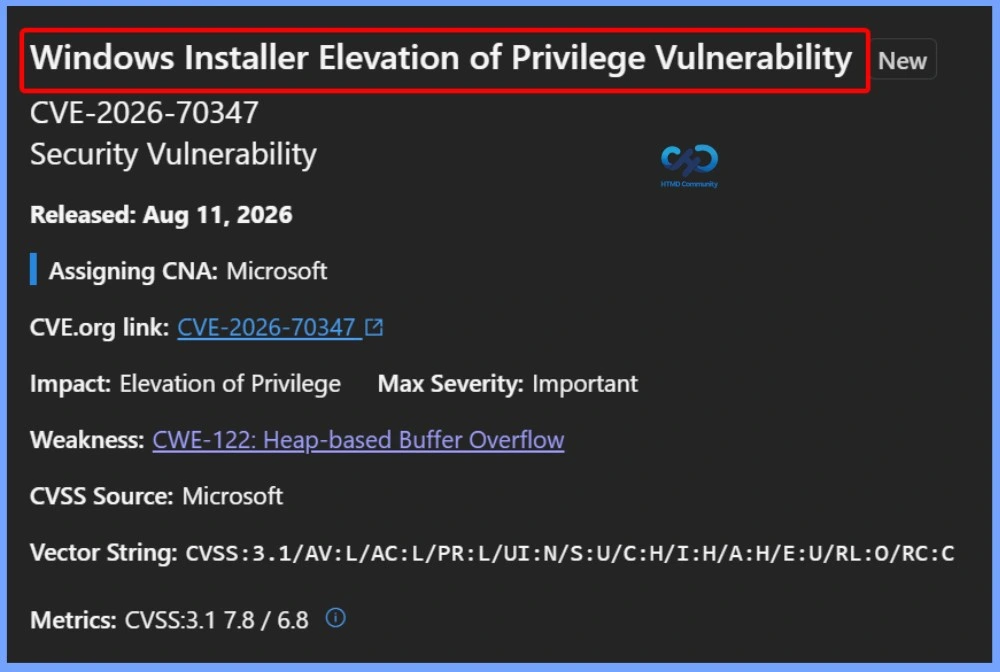
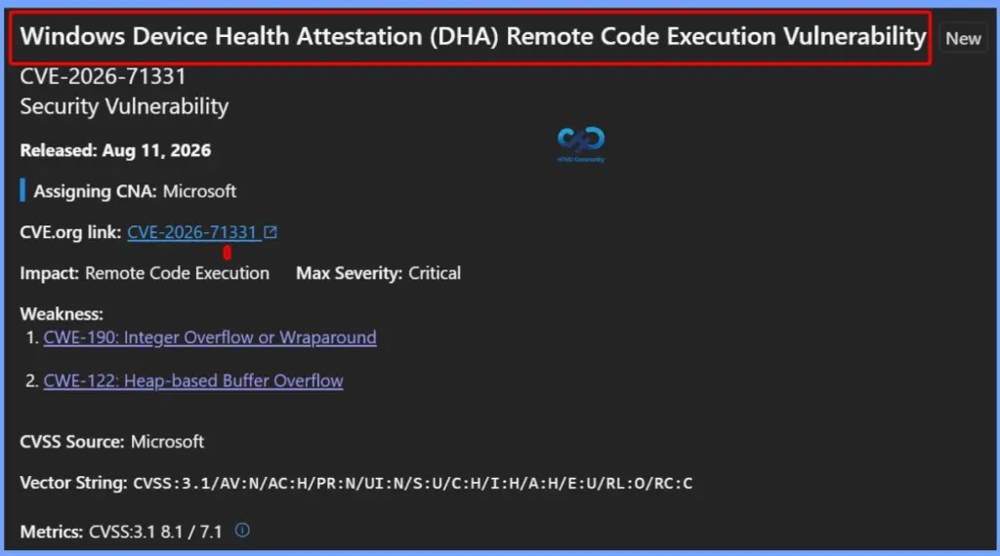
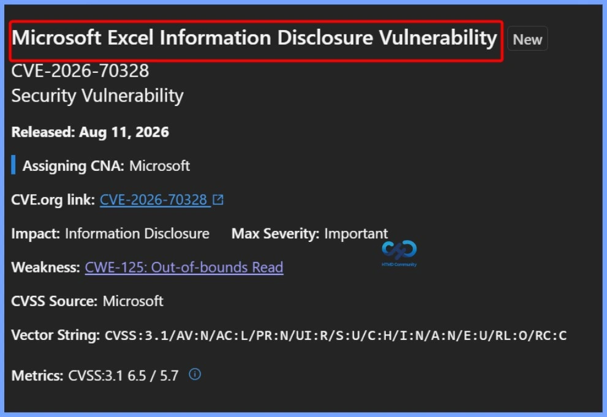
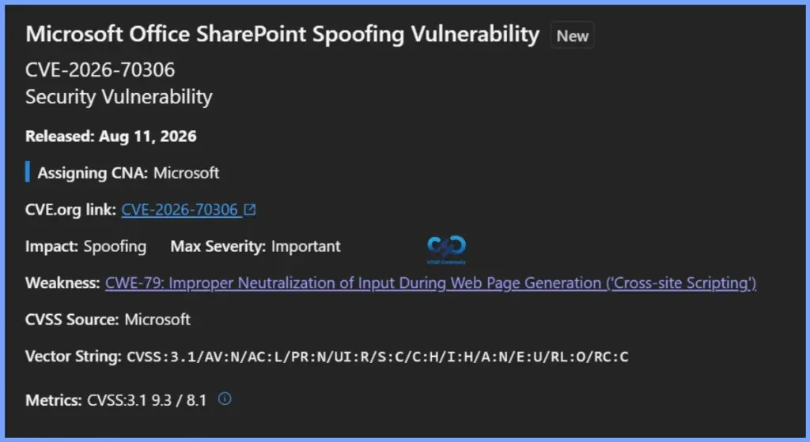
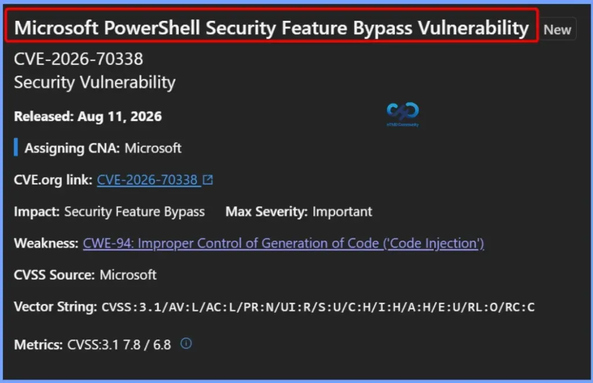

Key Takeaways
- 400 security vulnerabilities were fixed by Microsoft in the August 2026 Patch Tuesday updates.
- 2 publicly disclosed zero-day vulnerabilities were addressed.
- 1 vulnerability is actively exploited in the wild.
- 42 vulnerabilities are rated Critical, including:
- 37 Remote Code Execution (RCE)
- 5 Elevation of Privilege (EoP)
Microsoft Fixes 400 Security Vulnerabilities and 3 Zero-Day Vulnerabilities in August 2026 Patch Tuesday! Microsoft’s August 11, 2026 security updates address three zero-day vulnerabilities. CVE-2026-68820, a Windows Ancillary Function Driver for WinSock Elevation of Privilege vulnerability, is the most critical because Microsoft has confirmed that exploitation has been detected. The vulnerability was not publicly disclosed before the security update, making it particularly important for organisations to prioritise patching affected Windows systems.
Microsoft Fixes 400 Security Vulnerabilities and 3 Zero-Day Vulnerabilities in August 2026 Patch Tuesday
The other two vulnerabilities were publicly disclosed. CVE-2026-72971, affecting the Windows Container Isolation FS Filter Driver (unionfs.sys), is considered unlikely to be exploited. CVE-2026-62832, a Windows User Profile Service Elevation of Privilege vulnerability, is assessed as more likely to be exploited, although Microsoft has not confirmed exploitation. Organisations should prioritise these vulnerabilities based on their exploitability assessment and ensure the applicable August 2026 security updates are deployed promptly.

Microsoft August 2026 Patch Tuesday
Microsoft’s August 2026 Patch Tuesday addresses numerous security vulnerabilities across various categories. The updates include 176 Elevation of Privilege vulnerabilities, 110 Remote Code Execution vulnerabilities, and 86 Information Disclosure vulnerabilities. In addition, Microsoft has addressed 21 Spoofing vulnerabilities, 12 Denial-of-Service vulnerabilities, and 11 Security Feature Bypass vulnerabilities.
- 12 Denial of Service Vulnerabilities
- 21 Spoofing Vulnerabilities
- 176 Elevation of Privilege Vulnerabilities
- 11 Security Feature Bypass Vulnerabilities
- 110 Remote Code Execution Vulnerabilities
- 86 Information Disclosure Vulnerabilities

176 Elevation of Privilege Vulnerabilities
The August 2026 security updates address several Elevation of Privilege (EoP) vulnerabilities affecting Microsoft products and Windows components. These include vulnerabilities in Microsoft SharePoint Server, Windows Installer, Azure CycleCloud, GitHub Copilot and Visual Studio Code, Windows DNS, and the Windows Ancillary Function Driver for WinSock.
- CVE-2026-70355 Microsoft SharePoint Server Elevation of Privilege Vulnerability
- CVE-2026-70347 Windows Installer Elevation of Privilege Vulnerability
- CVE-2026-70346 Windows Installer Elevation of Privilege Vulnerability
- CVE-2026-70345 Windows Installer Elevation of Privilege Vulnerability
- CVE-2026-70344 Windows Installer Elevation of Privilege Vulnerability
- CVE-2026-70340 Azure CycleCloud Elevation of Privilege Vulnerability
- CVE-2026-70335 GitHub Copilot and Visual Studio Code Elevation of Privilege Vulnerability CVE-2026-70330 Windows DNS Elevation of Privilege Vulnerability
- CVE-2026-70326 Microsoft SharePoint Server Elevation of Privilege Vulnerability
- CVE-2026-70324 Microsoft SharePoint Elevation of Privilege Vulnerability
- CVE-2026-70307 Windows Ancillary Function Driver for WinSock Elevation of Privilege Vulnerability
- CVE-2026-70304 Windows DNS Elevation of Privilege Vulnerability
- CVE-2026-68821 Windows Package Manager Elevation of Privilege Vulnerability
- CVE-2026-68820 Windows Ancillary Function Driver for WinSock Elevation of Privilege Vulnerability
- CVE-2026-68792 Microsoft Office Elevation of Privilege Vulnerability
- CVE-2026-66804 Microsoft Windows Cross Device Service Elevation of Privilege Vulnerability
- CVE-2026-66799 Windows Key Guard Elevation of Privilege Vulnerability
- CVE-2026-65814 Microsoft Windows Storage Port Driver Elevation of Privilege Vulnerability
- CVE-2026-65813 Microsoft Exchange Server Elevation of Privilege Vulnerability
- CVE-2026-65810 .NET Framework Elevation of Privilege Vulnerability
- CVE-2026-65799 Windows DNS Elevation of Privilege Vulnerability
- CVE-2026-65798 Windows DNS Elevation of Privilege Vulnerability
- CVE-2026-65797 Windows DNS Elevation of Privilege Vulnerability
- CVE-2026-65795 Windows DNS Elevation of Privilege Vulnerability
- CVE-2026-65790 Windows Message Queuing Elevation of Privilege Vulnerability
- CVE-2026-65788 Desktop Window Manager Elevation of Privilege Vulnerability
- CVE-2026-65787 Desktop Window Manager Elevation of Privilege Vulnerability
- CVE-2026-65786 Desktop Window Manager Elevation of Privilege Vulnerability
- CVE-2026-65783 Windows Autopilot Elevation of Privilege Vulnerability
- CVE-2026-65782 Windows Autopilot Elevation of Privilege Vulnerability
- CVE-2026-65781 Windows Autopilot Elevation of Privilege Vulnerability
- CVE-2026-65780 Windows Autopilot Elevation of Privilege Vulnerability
- CVE-2026-65779 Windows Autopilot Elevation of Privilege Vulnerability
- CVE-2026-65778 Windows Autopilot Elevation of Privilege Vulnerability
- CVE-2026-65776 Windows Win32k Elevation of Privilege Vulnerability
- CVE-2026-65775 Windows Win32k Elevation of Privilege Vulnerability
- CVE-2026-65774 Windows Installer Elevation of Privilege Vulnerability
- CVE-2026-65773 Windows Kernel Elevation of Privilege Vulnerability
- CVE-2026-65680 Microsoft OneDrive for MacOS Elevation of Privilege Vulnerability
- CVE-2026-65678 Windows Win32k Elevation of Privilege Vulnerability
- CVE-2026-65673 Microsoft Entra Connect Elevation of Privilege Vulnerability
- CVE-2026-65672 Remote Access API Elevation of Privilege Vulnerability
- CVE-2026-65671 Remote Access API Elevation of Privilege Vulnerability
- CVE-2026-64921 Microsoft SharePoint Server Elevation of Privilege Vulnerability
- CVE-2026-62911 Microsoft Exchange Server Elevation of Privilege Vulnerability
- CVE-2026-62910 Microsoft Exchange Server Elevation of Privilege Vulnerability
- CVE-2026-62909 .NET Elevation of Privilege Vulnerability
- CVE-2026-62908 Windows Backup Engine Elevation of Privilege Vulnerability
- CVE-2026-62894 Windows DWM Core Library Elevation of Privilege Vulnerability
- CVE-2026-62892 Capability Access Management Service (camsvc) Elevation of Privilege Vulnerability
- CVE-2026-62888 Windows DWM Core Library Elevation of Privilege Vulnerability
- CVE-2026-62886 .NET Elevation of Privilege Vulnerability
- CVE-2026-62885 Windows Win32k Elevation of Privilege Vulnerability
- CVE-2026-62883 Windows DNS Elevation of Privilege Vulnerability
- CVE-2026-62881 Windows DNS Elevation of Privilege Vulnerability
- CVE-2026-62880 Windows NTFS Elevation of Privilege Vulnerability
- CVE-2026-62877 Windows Win32k Elevation of Privilege Vulnerability
- CVE-2026-62876 Windows Win32k Elevation of Privilege Vulnerability
- CVE-2026-62872 .NET Framework Elevation of Privilege Vulnerability
- CVE-2026-62832 Windows User Profile Service Elevation of Privilege Vulnerability
- CVE-2026-62827 Microsoft SharePoint Server Elevation of Privilege Vulnerability
- CVE-2026-62812 Windows DHCP Server Elevation of Privilege Vulnerability
- CVE-2026-62811 Windows HTTP.sys Elevation of Privilege Vulnerability
- CVE-2026-62807 Windows DHCP Server Elevation of Privilege Vulnerability
- CVE-2026-62803 Windows DHCP Server Elevation of Privilege Vulnerability
- CVE-2026-62799 Windows SMB Client Elevation of Privilege Vulnerability
- CVE-2026-62797 Windows NTFS Elevation of Privilege Vulnerability
- CVE-2026-62788 Windows Kernel Elevation of Privilege Vulnerability
- CVE-2026-62783 Windows Remote Access Connection Manager Elevation of Privilege Vulnerability
- CVE-2026-62780 Windows Kernel Elevation of Privilege Vulnerability
- CVE-2026-62779 Windows Schannel Elevation of Privilege Vulnerability
- CVE-2026-62778 Windows DNS Elevation of Privilege Vulnerability
- CVE-2026-62777 Windows License Manager Elevation of Privilege Vulnerability
- CVE-2026-62776 Windows DHCP Server Elevation of Privilege Vulnerability
- CVE-2026-62774 Windows Graphics Kernel Elevation of Privilege Vulnerability
- CVE-2026-62773 Windows Kerberos Elevation of Privilege Vulnerability
- CVE-2026-62772 Windows Container Isolation FS Filter Driver (unionfs.sys) Elevation of Privilege Vulnerability
- CVE-2026-62771 Windows Cloud Files Mini Filter Driver Elevation of Privilege Vulnerability CVE-2026-62770 Windows Shell Elevation of Privilege Vulnerability
- CVE-2026-62769 Windows DNS Elevation of Privilege Vulnerability
- CVE-2026-62768 Windows Installer Elevation of Privilege Vulnerability
- CVE-2026-62766 Windows Kerberos Elevation of Privilege Vulnerability
- CVE-2026-62761 Windows DHCP Server Elevation of Privilege Vulnerability
- CVE-2026-62758 Windows Remote Access Connection Manager Elevation of Privilege Vulnerability
- CVE-2026-62755 Windows DHCP Client Elevation of Privilege Vulnerability
- CVE-2026-62754 Windows Kerberos Elevation of Privilege Vulnerability
- CVE-2026-62753 Windows HTTP.sys Elevation of Privilege Vulnerability
- CVE-2026-62752 Windows Kerberos Elevation of Privilege Vulnerability
- CVE-2026-62751 Windows Projected File System Elevation of Privilege Vulnerability
- CVE-2026-62749 Windows Kernel Elevation of Privilege Vulnerability
- CVE-2026-62748 Windows Telephony Service Elevation of Privilege Vulnerability
- CVE-2026-62747 Windows Device Association Service Elevation of Privilege Vulnerability CVE-2026-62741 Windows HTTP.sys Elevation of Privilege Vulnerability
- CVE-2026-62739 Windows HTTP.sys Elevation of Privilege Vulnerability
- CVE-2026-62737 Windows Kernel Elevation of Privilege Vulnerability
- CVE-2026-62736 Windows DHCP Client Elevation of Privilege Vulnerability
- CVE-2026-62735 Windows HTTP.sys Elevation of Privilege Vulnerability
- CVE-2026-62734 Windows Telephony Service Elevation of Privilege Vulnerability
- CVE-2026-62733 Windows Win32k Elevation of Privilege Vulnerability
- CVE-2026-62732 Windows Telephony Service Elevation of Privilege Vulnerability
- CVE-2026-62729 Windows Telephony Service Elevation of Privilege Vulnerability
- CVE-2026-62728 Windows Common Log File System Driver Elevation of Privilege Vulnerability
- CVE-2026-62726 Windows Telephony Service Elevation of Privilege Vulnerability
- CVE-2026-62725 Windows Telephony Service Elevation of Privilege Vulnerability
- CVE-2026-62724 Windows Telephony Service Elevation of Privilege Vulnerability
- CVE-2026-62723 Windows Telephony Service Elevation of Privilege Vulnerability
- CVE-2026-62722 Windows Bind Filter Driver Elevation of Privilege Vulnerability
- CVE-2026-62721 Windows User-Mode Power Service (UMPS) Elevation of Privilege Vulnerability
- CVE-2026-62719 Windows Message Queuing Elevation of Privilege Vulnerability
- CVE-2026-62717 Windows Message Queuing Elevation of Privilege Vulnerability
- CVE-2026-62713 Windows Cloud Files Mini Filter Driver Elevation of Privilege Vulnerability CVE-2026-62712 Windows Win32k Elevation of Privilege Vulnerability
- CVE-2026-62711 Windows Win32k Elevation of Privilege Vulnerability
- CVE-2026-62710 Windows Device Association Service Elevation of Privilege Vulnerability CVE-2026-62708 Windows Kernel Elevation of Privilege Vulnerability
- CVE-2026-62707 Windows Modern Device Management (MDM) Elevation of Privilege Vulnerability
- CVE-2026-62705 Windows Bind Filter Driver Elevation of Privilege Vulnerability
- CVE-2026-62701 Windows Telephony Service Elevation of Privilege Vulnerability
- CVE-2026-62700 Windows NTFS Elevation of Privilege Vulnerability
- CVE-2026-62698 Microsoft Digest Authentication Elevation of Privilege Vulnerability
- CVE-2026-62696 Windows Program Compatibility Assistant Service Elevation of Privilege Vulnerability CVE-2026-62695 Windows Storage Elevation of Privilege Vulnerability
- CVE-2026-62693 Windows MIDI Service Module Elevation of Privileges Vulnerability
- CVE-2026-62692 Windows Remote Desktop Services Elevation of Privilege Vulnerability CVE-2026-62690 Windows Push Notifications Elevation of Privilege Vulnerability
- CVE-2026-62688 Windows MIDI Service Module Elevation of Privileges Vulnerability
- CVE-2026-61939 Winlogon Elevation of Privilege Vulnerability
- CVE-2026-61938 Windows Installer Elevation of Privilege Vulnerability
- CVE-2026-61937 Windows HTTP.sys Elevation of Privilege Vulnerability
- CVE-2026-61934 Windows Bind Filter Driver Elevation of Privilege Vulnerability
- CVE-2026-61932 Windows DWM Core Library Elevation of Privilege Vulnerability
- CVE-2026-61930 Windows Kernel Elevation of Privilege Vulnerability
- CVE-2026-61929 Windows Kernel Elevation of Privilege Vulnerability
- CVE-2026-61927 Windows Bind Filter Driver Elevation of Privilege Vulnerability
- CVE-2026-61926 Windows USB Driver Elevation of Privilege Vulnerability
- CVE-2026-61925 Windows Installer Elevation of Privilege Vulnerability
- CVE-2026-61923 Windows Display Enhancement Service Elevation of Privilege Vulnerability
- CVE-2026-61367 Windows Remote Desktop Services Elevation of Privilege Vulnerability
- CVE-2026-61366 Windows Network Connection Broker Elevation of Privilege Vulnerability
- CVE-2026-61365 Windows Remote Desktop Services Elevation of Privilege Vulnerability
- CVE-2026-61364 Windows Remote Desktop Services Elevation of Privilege Vulnerability
- CVE-2026-61359 Windows Storage Elevation of Privilege Vulnerability
- CVE-2026-61358 Windows Accessibility Infrastructure (ATBroker.exe) Elevation of Privilege Vulnerability
- CVE-2026-61357 Application Information Services Elevation of Privilege Vulnerability
- CVE-2026-61356 Windows Remote Desktop Services Elevation of Privilege Vulnerability
- CVE-2026-61355 Windows Sensor Data Service Elevation of Privilege Vulnerability
- CVE-2026-61353 Windows Telephony Service Elevation of Privilege Vulnerability
- CVE-2026-61349 Windows Work Folder Service Elevation of Privilege Vulnerability
- CVE-2026-61348 Windows Ancillary Function Driver for WinSock Elevation of Privilege Vulnerability
- CVE-2026-61346 Windows Graphics Kernel Elevation of Privilege Vulnerability
- CVE-2026-59133 Microsoft High Performance Computing (HPC) Pack Elevation of Privilege Vulnerability
- CVE-2026-59127 Windows Installer Elevation of Privilege Vulnerability
- CVE-2026-59126 Windows Event Logging Service Elevation of Privilege Vulnerability
- CVE-2026-59125 Virtual Hard Disk (VHD) Miniport Driver Elevation of Privilege Vulernability
- CVE-2026-59122 Windows Telephony Service Elevation of Privilege Vulnerability
- CVE-2026-59119 PowerShell Elevation of Privilege Vulnerability
- CVE-2026-59118 Copilot Cowork Elevation of Privilege Vulnerability
- CVE-2026-58641 .NET Elevation of Privilege Vulnerability
- CVE-2026-58538 Windows Bluetooth Service Elevation of Privilege Vulnerability
- CVE-2026-57104 Azure Storage Explorer Elevation of Privilege Vulnerability
- CVE-2026-56174 Windows Narrator Braille Elevation of Privilege Vulnerability
- CVE-2026-50687 Windows Win32k Elevation of Privilege Vulnerability
- CVE-2026-50472 Windows LUA File Virtualization Filter Driver Elevation of Privilege Vulnerability
- CVE-2026-47299 Azure Monitor Agent Elevation of Privilege Vulnerability
- CVE-2026-45637 Microsoft DWM Core Library Elevation of Privilege Vulnerability
- CVE-2026-42976 Remote Access Management service/API (RPC server) Elevation of Privilege Vulnerability

110 Remote Code Execution Vulnerabilities
Microsoft’s August 2026 security updates address 110 Remote Code Execution (RCE) vulnerabilities across various Microsoft products and services. These include Windows Device Health Attestation (DHA), .NET Core, Microsoft Edge, PowerShell, Visual Studio Code, Outlook, SharePoint, and Microsoft Office. Among the listed vulnerabilities, CVE-2026-71331 and CVE-2026-70130 are rated Critical, while the remaining vulnerabilities are rated Important.
- CVE-2026-71331 Windows Device Health Attestation (DHA) Remote Code Execution Vulnerability
- CVE-2026-70354 .NET Core Remote Code Execution Vulnerability
- CVE-2026-70339 Microsoft Edge (Chromium-based) Remote Code Execution Vulnerability CVE-2026-70337 Microsoft PowerShell Remote Code Execution Vulnerability
- CVE-2026-70336 Visual Studio Code Remote Code Execution Vulnerability
- CVE-2026-70329 Microsoft Outlook Remote Code Execution Vulnerability
- CVE-2026-70321 Microsoft SharePoint Remote Code Execution Vulnerability
- CVE-2026-70311 Microsoft Office Word Remote Code Execution Vulnerability
- CVE-2026-70130 Microsoft Office Remote Code Execution Vulnerability
- CVE-2026-69320 Visual Studio Code Remote Code Execution Vulnerability
- CVE-2026-68817 Microsoft Excel Remote Code Execution Vulnerability
- CVE-2026-68816 Microsoft Excel Remote Code Execution Vulnerability
- CVE-2026-68815 Microsoft Excel Remote Code Execution Vulnerability
- CVE-2026-68814 Microsoft Excel Remote Code Execution Vulnerability
- CVE-2026-68812 Microsoft Excel Remote Code Execution Vulnerability
- CVE-2026-68811 Microsoft Excel Remote Code Execution Vulnerability
- CVE-2026-68810 Microsoft Excel Remote Code Execution Vulnerability
- CVE-2026-68807 Microsoft Excel Remote Code Execution Vulnerability
- CVE-2026-68806 Microsoft Excel Remote Code Execution Vulnerability
- CVE-2026-68805 Microsoft Excel Remote Code Execution Vulnerability
- CVE-2026-68804 Microsoft Excel Remote Code Execution Vulnerability
- CVE-2026-68803 Microsoft Excel Remote Code Execution Vulnerability
- CVE-2026-68801 Microsoft Excel Remote Code Execution Vulnerability
- CVE-2026-68800 Microsoft Excel Remote Code Execution Vulnerability
- CVE-2026-68798 Microsoft Excel Remote Code Execution Vulnerability
- CVE-2026-68796 Microsoft Excel Remote Code Execution Vulnerability
- CVE-2026-68795 Microsoft Excel Remote Code Execution Vulnerability
- CVE-2026-68794 Microsoft Excel Remote Code Execution Vulnerability
- CVE-2026-68793 Microsoft Excel Remote Code Execution Vulnerability
- CVE-2026-66808 Microsoft SharePoint Server Remote Code Execution Vulnerability
- CVE-2026-66807 Microsoft Office Graphics Component Remote Code Execution Vulnerability
- CVE-2026-66805 Microsoft SharePoint Server Remote Code Execution Vulnerability
- CVE-2026-66802 Windows Device Health Attestation (DHA) Remote Code Execution Vulnerability
- CVE-2026-65815 Microsoft Dynamics 365 On-Premises Remote Code Execution Vulnerability
- CVE-2026-65811 Power BI Remote Code Execution Vulnerability
- CVE-2026-65807 Microsoft Excel Remote Code Execution Vulnerability
- CVE-2026-65791 Windows iSCSI Target Service Remote Code Execution Vulnerability
- CVE-2026-65789 Windows DNS Server Remote Code Execution Vulnerability
- CVE-2026-65768 Microsoft Teams Remote Code Execution Vulnerability
- CVE-2026-65679 Windows iSCSI Target Service Remote Code Execution Vulnerability
- CVE-2026-65665 Microsoft SharePoint Server Remote Code Execution Vulnerability
- CVE-2026-65664 Microsoft Office Graphics Component Remote Code Execution Vulnerability
- CVE-2026-65663 Microsoft SharePoint Server Remote Code Execution Vulnerability
- CVE-2026-65661 Microsoft Office Remote Code Execution Vulnerability
- CVE-2026-65658 Microsoft SharePoint Server Remote Code Execution Vulnerability
- CVE-2026-65657 Microsoft Office Remote Code Execution Vulnerability
- CVE-2026-65656 Microsoft Office Remote Code Execution Vulnerability
- CVE-2026-64920 Microsoft Access Remote Code Execution Vulnerability
- CVE-2026-64919 Microsoft Access Remote Code Execution Vulnerability
- CVE-2026-64915 Microsoft Office Word Remote Code Execution Vulnerability
- CVE-2026-64914 Microsoft Access Remote Code Execution Vulnerability
- CVE-2026-64912 Microsoft Access Remote Code Execution Vulnerability
- CVE-2026-64911 Microsoft Office Remote Code Execution Vulnerability
- CVE-2026-64910 Microsoft Office Remote Code Execution Vulnerability
- CVE-2026-64909 Microsoft Office Remote Code Execution Vulnerability
- CVE-2026-64908 Microsoft Access Remote Code Execution Vulnerability
- CVE-2026-64907 Microsoft Office Word Remote Code Execution Vulnerability
- CVE-2026-64906 Microsoft Access Remote Code Execution Vulnerability
- CVE-2026-64905 Microsoft Office Word Remote Code Execution Vulnerability
- CVE-2026-64904 Microsoft Office Remote Code Execution Vulnerability
- CVE-2026-64903 Microsoft Office Remote Code Execution Vulnerability
- CVE-2026-64901 Microsoft SharePoint Server Remote Code Execution Vulnerability
- CVE-2026-64898 Microsoft Office Remote Code Execution Vulnerability
- CVE-2026-63533 Microsoft Office Remote Code Execution Vulnerability
- CVE-2026-63532 Microsoft Office Remote Code Execution Vulnerability
- CVE-2026-63527 Microsoft Office Word Remote Code Execution Vulnerability
- CVE-2026-63526 Microsoft Office Graphics Component Remote Code Execution Vulnerability
- CVE-2026-63525 Microsoft Office Word Remote Code Execution Vulnerability
- CVE-2026-63520 Microsoft SharePoint Server Remote Code Execution Vulnerability
- CVE-2026-63519 Microsoft Office Graphics Component Remote Code Execution Vulnerability
- CVE-2026-63518 Microsoft Office Word Remote Code Execution Vulnerability
- CVE-2026-63515 Microsoft Office Remote Code Execution Vulnerability
- CVE-2026-63514 Microsoft SharePoint Server Remote Code Execution Vulnerability
- CVE-2026-63513 Microsoft Office Graphics Component Remote Code Execution Vulnerability
- CVE-2026-62913 Microsoft Exchange Server Remote Code Execution Vulnerability
- CVE-2026-62897 .NET Framework Remote Code Execution Vulnerability
- CVE-2026-62893 Windows Deployment Services TFTP Server Remote Code Execution Vulnerability
- CVE-2026-62890 Windows GDI+ Elevation of Privilege Vulnerability
- CVE-2026-62889 Windows Secure Socket Tunneling Protocol (SSTP) Remote Code Execution Vulnerability
- CVE-2026-62878 Windows DNS Server Remote Code Execution Vulnerability
- CVE-2026-62871 .NET Elevation of Privilege Vulnerability
- CVE-2026-62824 Remote Desktop Client Remote Code Execution Vulnerability
- CVE-2026-62823 Windows DHCP Server Remote Code Execution Vulnerability
- CVE-2026-62822 Windows GDI+ Remote Code Execution Vulnerability
- CVE-2026-62820 Windows DNS Server Remote Code Execution Vulnerability
- CVE-2026-62819 Windows Routing and Remote Access Service (RRAS) Remote Code Execution Vulnerability
- CVE-2026-62818 Windows Active Directory Certificate Services (AD CS) Remote Code Execution Vulnerability
- CVE-2026-62817 Windows DNS Server Remote Code Execution Vulnerability
- CVE-2026-62816 Windows Reliable Multicast Transport Driver (RMCAST) Remote Code Execution Vulnerability
- CVE-2026-62815 Microsoft QUIC Remote Code Execution Vulnerability
- CVE-2026-62800 Windows SMBv3 Server Remote Code Execution Vulnerability
- CVE-2026-62795 Windows LDAP – Lightweight Directory Access Protocol Remote Code Execution Vulnerability
- CVE-2026-62792 Windows TCP/IP Remote Code Execution Vulnerability
- CVE-2026-62790 Windows SMBv3 Server Remote Code Execution Vulnerability
- CVE-2026-62787 Windows DNS Server Remote Code Execution Vulnerability
- CVE-2026-62785 Windows LDAP – Lightweight Directory Access Protocol Remote Code Execution Vulnerability
- CVE-2026-62784 Microsoft Local Security Authority Server (lsasrv) Remote Code Execution Vulnerability
- CVE-2026-62781 RPC Runtime Library Remote Code Execution Vulnerability
- CVE-2026-62699 Windows Universal Disk Format File System Driver (UDFS) Remote Code Execution Vulnerability
- CVE-2026-61920 Windows DNS Server Remote Code Execution Vulnerability
- CVE-2026-61363 Remote Desktop Client Remote Code Execution Vulnerability
- CVE-2026-61361 Windows DHCP Client Remote Code Execution Vulnerability
- CVE-2026-61352 Remote Desktop Client Remote Code Execution Vulnerability
- CVE-2026-59134 Remote Desktop Client Remote Code Execution Vulnerability
- CVE-2026-59124 Microsoft High Performance Computing (HPC) Pack Remote Code Execution Vulnerability
- CVE-2026-59113 Visual Studio Code Remote Code Execution Vulnerability
- CVE-2026-58651 Microsoft Word Remote Code Execution Vulnerability
- CVE-2026-54984 Windows Imaging Component Remote Code Execution Vulnerability
- CVE-2026-50655 Microsoft Windows Media Foundation Remote Code Execution Vulnerability
- CVE-2026-49179 Windows Active Directory Domain Services Remote Code Execution Vulnerability
- CVE-2022-41127 Microsoft Dynamics NAV and Microsoft Dynamics 365 Business Central (On Premises) Remote Code Execution Vulnerability

86 Information Disclosure Vulnerabilities
Microsoft’s August 2026 security updates address 86 Information Disclosure vulnerabilities affecting products including Microsoft Excel, PowerPoint, Word, and Microsoft Office. The listed vulnerabilities are all rated Important and are currently assessed as less likely to be exploited.
- CVE-2026-70328 Microsoft Excel Information Disclosure Vulnerability
- CVE-2026-70327 Microsoft Excel Information Disclosure Vulnerability
- CVE-2026-70325 Powerpoint Information Disclosure Vulnerability
- CVE-2026-70323 Microsoft Office Information Disclosure Vulnerability
- CVE-2026-70322 Powerpoint Information Disclosure Vulnerability
- CVE-2026-70320 Powerpoint Information Disclosure Vulnerability
- CVE-2026-70319 Microsoft Office Word Information Disclosure Vulnerability
- CVE-2026-70318 Microsoft Excel Information Disclosure Vulnerability
- CVE-2026-70317 Microsoft Office Information Disclosure Vulnerability
- CVE-2026-70316 Powerpoint Information Disclosure Vulnerability
- CVE-2026-70315 Microsoft Office Information Disclosure Vulnerability
- CVE-2026-70314 Microsoft Office Information Disclosure Vulnerability
- CVE-2026-70313 Microsoft PowerPoint Remote Code Execution Vulnerability
- CVE-2026-70312 Powerpoint Information Disclosure Vulnerability
- CVE-2026-70310 Microsoft Word Information Disclosure Vulnerability
- CVE-2026-68813 Microsoft Excel Information Disclosure Vulnerability
- CVE-2026-68809 Powerpoint Information Disclosure Vulnerability
- CVE-2026-68808 Microsoft Excel Information Disclosure Vulnerability
- CVE-2026-68802 Microsoft Excel Information Disclosure Vulnerability
- CVE-2026-68799 Microsoft Excel Information Disclosure Vulnerability
- CVE-2026-68797 Microsoft Excel Information Disclosure Vulnerability
- CVE-2026-66810 Microsoft Office Word Information Disclosure Vulnerability
- CVE-2026-66809 Microsoft Office Graphics Component Information Disclosure Vulnerability
- CVE-2026-66806 Microsoft Office Word Information Disclosure Vulnerability
- CVE-2026-66301 Microsoft Dynamics 365 (On-Premises) Information Disclosure Vulnerability
- CVE-2026-65806 Azure CycleCloud Information Disclosure Vulnerability
- CVE-2026-65794 Windows SMB Client Information Disclosure Vulnerability
- CVE-2026-65784 Windows NTFS Information Disclosure Vulnerability
- CVE-2026-65769 Microsoft Teams iOS Information Disclosure Vulnerability
- CVE-2026-65662 Windows GDI Information Disclosure Vulnerability
- CVE-2026-64917 Microsoft Office Word Information Disclosure Vulnerability
- CVE-2026-64899 Microsoft Office Information Disclosure Vulnerability
- CVE-2026-63531 Microsoft Office Word Information Disclosure Vulnerability
- CVE-2026-63530 Microsoft Office Word Information Disclosure Vulnerability
- CVE-2026-63529 Microsoft Office Information Disclosure Vulnerability
- CVE-2026-63528 Microsoft Office Word Information Disclosure Vulnerability
- CVE-2026-63524 Microsoft Office Information Disclosure Vulnerability
- CVE-2026-63521 Microsoft Office Word Information Disclosure Vulnerability
- CVE-2026-63517 Microsoft Office Graphics Component Information Disclosure Vulnerability
- CVE-2026-62902 .NET Information Disclosure Vulnerability
- CVE-2026-62900 .NET Information Disclosure Vulnerability
- CVE-2026-62898 Microsoft QUIC Information Disclosure Vulnerability
- CVE-2026-62887 Windows NTFS Information Disclosure Vulnerability
- CVE-2026-62842 Microsoft Office Graphics Component Information Disclosure Vulnerability
- CVE-2026-62837 Microsoft SharePoint Server Information Disclosure Vulnerability
- CVE-2026-62814 Windows DHCP Server Information Disclosure Vulnerability
- CVE-2026-62798 Win32k Information Disclosure Vulnerability
- CVE-2026-62796 Windows NTFS Information Disclosure Vulnerability
- CVE-2026-62793 Windows NTFS Information Disclosure Vulnerability
- CVE-2026-62786 Win32k Information Disclosure Vulnerability
- CVE-2026-62782 Windows SMB Client Information Disclosure Vulnerability
- CVE-2026-62775 Windows Container Isolation FS Filter Driver (unionfs.sys) Information Disclosure Vulnerability
- CVE-2026-62746 Win32k Information Disclosure Vulnerability
- CVE-2026-62745 Windows DHCP Server Information Disclosure Vulnerability
- CVE-2026-62743 Win32k Information Disclosure Vulnerability
- CVE-2026-62742 Windows DHCP Server Information Disclosure Vulnerability
- CVE-2026-62740 Windows Imaging Component Information Disclosure Vulnerability
- CVE-2026-62738 Windows Management Instrumentation Information Disclosure Vulnerability
- CVE-2026-62730 Windows Wired AutoConfig Service Information Disclosure Vulnerability
- CVE-2026-62720 Windows DHCP Server Information Disclosure Vulnerability
- CVE-2026-62718 Windows DHCP Server Information Disclosure Vulnerability
- CVE-2026-62716 Windows DHCP Server Information Disclosure Vulnerability
- CVE-2026-62715 Windows DHCP Server Information Disclosure Vulnerability
- CVE-2026-62714 Windows DHCP Server Information Disclosure Vulnerability
- CVE-2026-62709 Windows GDI+ Information Disclosure Vulnerability
- CVE-2026-62703 Windows DWM Core Library Information Disclosure Vulnerability
- CVE-2026-61933 Windows DWM Core Library Information Disclosure Vulnerability
- CVE-2026-61924 Windows Remote Desktop Client Information Disclosure Vulnerability
- CVE-2026-61921 Windows Remote Desktop Client Information Disclosure Vulnerability
- CVE-2026-61918 Windows Remote Desktop Client Information Disclosure Vulnerability
- CVE-2026-61368 Windows Hyper-V Information Disclosure Vulnerability
- CVE-2026-61360 Windows GDI Information Disclosure Vulnerability
- CVE-2026-61350 Windows NTFS Information Disclosure Vulnerability
- CVE-2026-61347 Windows Event Logging Service Information Disclosure Vulnerability
- CVE-2026-59137 Windows Event Logging Service Information Disclosure Vulnerability
- CVE-2026-59136 Microsoft COM for Windows Information Disclosure Vulnerability
- CVE-2026-59135 Microsoft Windows Search Component Information Disclosure Vulnerability
- CVE-2026-59131 AMD Zen Information Disclosure Vulnerability
- CVE-2026-59130 AMD Zen Information Disclosure Vulnerability
- CVE-2026-59128 Windows Encrypting File System (EFS) Information Disclosure Vulnerability
- CVE-2026-58612 PowerShell Information Disclosure Vulnerability
- CVE-2026-54123 Microsoft Defender for Endpoint for Mac Information Disclosure Vulnerability
- CVE-2026-47285 Visual Studio Code Information Disclosure Vulnerability
- CVE-2026-40375 Microsoft Dynamics Business Central Information Disclosure Vulnerability

21 Spoofing vulnerabilities
Microsoft’s August 2026 security updates address 21 Spoofing vulnerabilities affecting products such as Microsoft SharePoint, SharePoint Server, and Microsoft Teams for Android and iOS. The vulnerabilities listed above are rated Important, with most assessed as less likely to be exploited, while some are considered unlikely or have no specific exploitability assessment.

11 Security Feature Bypass Vulnerabilities
Microsoft addressed 11 Security Feature Bypass vulnerabilities in the August 2026 security updates. The vulnerabilities include issues affecting PowerShell, Visual Studio Code, Active Directory, Copilot Chat, Exchange Server, .NET, Windows Schannel, and Windows Defender Firewall Service.
- CVE-2026-70338 Microsoft PowerShell Security Feature Bypass Vulnerability
- CVE-2026-69306 Visual Studio Code Security Feature Bypass Vulnerability
- CVE-2026-69278 Visual Studio Code Security Feature Bypass Vulnerability
- CVE-2026-65777 Active Directory Security Feature Bypass Vulnerability
- CVE-2026-65675 CoPilot Chat Security Feature Bypass Vulnerability
- CVE-2026-62915 Microsoft Exchange Server Security Feature Bypass Vulnerability
- CVE-2026-62899 .NET Security Feature Bypass Vulnerability
- CVE-2026-62757 Windows Schannel Security Feature Bypass Vulnerability
- CVE-2026-61936 Windows Defender Firewall Service Security Feature Bypass Vulnerability
- CVE-2026-58650 Visual Studio Code Security Feature Bypass Vulnerability
- CVE-2026-54981 Visual Studio Code Python Extension Security Feature Bypass Vulnerability

12 Denial of Service Vulnerabilities
Microsoft addressed 6 Denial of Service (DoS) vulnerabilities in the August 2026 security updates. These vulnerabilities affect Windows Management Services, Windows Network File System (NFS), Windows iSCSI Target Service, Windows DHCP Client, and Microsoft Exchange Server.
- CVE-2026-70348 Windows Management Services Denial of Service Vulnerability
- CVE-2026-68819 Windows Network File System Denial of Service Vulnerability
- CVE-2026-65796 Windows iSCSI Target Service Denial of Service Vulnerability
- CVE-2026-65785 Windows DHCP Client Denial of Service Vulnerability
- CVE-2026-65681 Windows iSCSI Target Service Denial of Service Vulnerability
- CVE-2026-62912 Microsoft Exchange Server Denial of Service Vulnerability
- CVE-2026-62901 .NET Denial of Service Vulnerability
- CVE-2026-62702 Windows Graphics Kernel Denial of Service Vulnerability
- CVE-2026-61345 Microsoft Remote Registry Service Denial of Service Vulnerability
- CVE-2026-59138 Microsoft Remote Registry Service Denial of Service Vulnerability
- CVE-2026-59132 Windows TCP/IP Denial of Service Vulnerability
- CVE-2026-54113 Remote Procedure Call Denial of Service Vulnerability
Need Further Assistance or Have Technical Questions?
Join the LinkedIn Page and Telegram group to get the latest step-by-step guides and news updates. Join our Meetup Page to participate in User group meetings. Also, join the WhatsApp Community and the Whatsapp channel to get the latest news on Microsoft Technologies. We are there on Reddit as well.
Author
Anoop C Nair is Workplace Technology solution architect with 25+ years of experience in global enterprise organizations such as JP Morgan, Capgemini, etc. He is Microsoft Certified Trainer. Microsoft MVP from 2015 onwards for consecutive 11 years! He also conducts Intune and modern workplace tech training for enterprise organizations. He is Blogger, Speaker, and Founder of HTMD Community and HTMD Conference. His focus is on Device Management technologies such as Intune, Windows, Cloud PC. He writes about technologies like Intune, SCCM, Windows, Cloud PC, Windows, Entra, Microsoft Security.